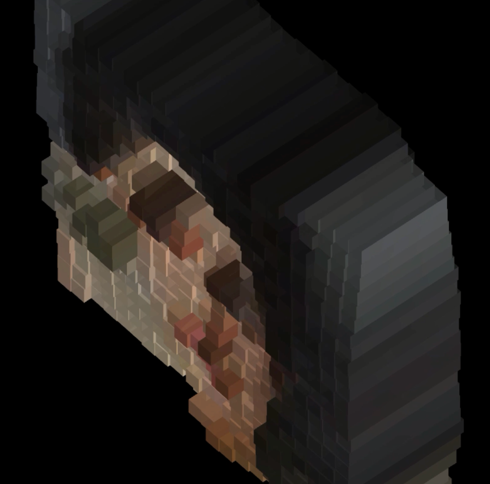
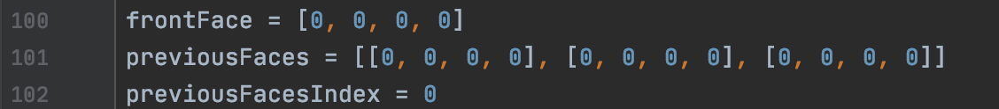

Small Object of Delight (SOD)
This was the first project in Magnus's class. I explored playing around with camera filters and video processing, and interesting ways to make them fun to interact with.
The first part of this project was made in p5.js, but due to performance issues I changed to using OpenCV.
Using OpenCV was new to me and I used it in Python, which I wasn't too familiar with so it was a big learning experience for me.
Inspiration

These are some of the p5.js projects that inspired me to work on camera filters and video processing. Clicking on the images brings you to the openprocessing page of that project.
Learning OpenCV


I followed a 3 hour long youtube tutorial by Murtaza's Workshop.
I learned the basics of manipulating images and video using OpenCV from this extremely helpful tutorial.
The second image is a screenshot I made after completing most of the tutorial sections that I needed.
As recommended by the tutorial, I used PyCharm, which is a Python IDE by Jetbrains. Image processing is better optimized with OpenCV compared to the p5.js filters I mostly wrote myself. By the end of the project, with all the filters I could fit running at the same time, the application still ran at around 15FPS, which was a lot better than the p5.js version.
As recommended by the tutorial, I used PyCharm, which is a Python IDE by Jetbrains. Image processing is better optimized with OpenCV compared to the p5.js filters I mostly wrote myself. By the end of the project, with all the filters I could fit running at the same time, the application still ran at around 15FPS, which was a lot better than the p5.js version.
Experimentation
After finishing the tutorial, I started experimenting more with different filters and effects, and trying to add some sort of interactivity with the effects.
I used face detection with Haar Cascades, then changed the position or strength of many filters depending on the X or Y position of the person's face from the center of the screen.
There were some interesting ways to get around issues. For example, some effects that would adjust the position or rotation of the video from the input video needed something outside the borders.
I mirrored the video outside the borders so that the space outside wouldn't just be black.
Face Stabilisation

One issue that stuck out because it took so long to fix was an issue where the person's face isn't completely still, as seen in the video.
Any effects that are sensitive to small changes in the position of the face would jitter a lot.
I fixed this by averaging the position of the person's face with the past few frames. This would help smooth the position of the face a lot, and eliminate jiters.
Another issue was the face detection would sometimes detect other faces in the background, but I only wanted to focus on one face, the main person interacting with the project. I fixed this by comparing the sizes of each of the faces detected and only using the largest face, which would, in most cases, be the closest face interacting with the project.
Another issue was the face detection would sometimes detect other faces in the background, but I only wanted to focus on one face, the main person interacting with the project. I fixed this by comparing the sizes of each of the faces detected and only using the largest face, which would, in most cases, be the closest face interacting with the project.
Final Result
Here is the final result that I ended this project on.
On the left, the R, G, and B values shift at different speeds from the center as the person moves. They also each have different effects like blur, canny outline, and varying strengths in their output.
The filter on the right also has the same effects in terms of the R, G, and B filters. But, the person is always centered.
The image below is an interesting effect produced when there is a face detected where there is none. Having my face there makes it more interesting as my face is no longer centered.
On the left, the R, G, and B values shift at different speeds from the center as the person moves. They also each have different effects like blur, canny outline, and varying strengths in their output.
The filter on the right also has the same effects in terms of the R, G, and B filters. But, the person is always centered.
The image below is an interesting effect produced when there is a face detected where there is none. Having my face there makes it more interesting as my face is no longer centered.
Future Development
I could develop this project further by exploring more complicated ways to change the images. One filter I really liked from the Filter Forge experimentation with Carl was a distortion filter.
Unfortunately I couldn't find a source on how to recreate this effect that I could understand, so I didn't include it in my initial project.
I could also develop this project further by trying to make AR face filters like the ones that can be found in Snapchat and Instagram.
I could also develop this project further by trying to make AR face filters like the ones that can be found in Snapchat and Instagram.
Additional comments
This project was really fun to experiment with and I learned a lot about working with OpenCV. Working on this project also helped me brush up on my Python programming skills.
I probably will work with OpenCV again the future so this project will be good to refer back to.